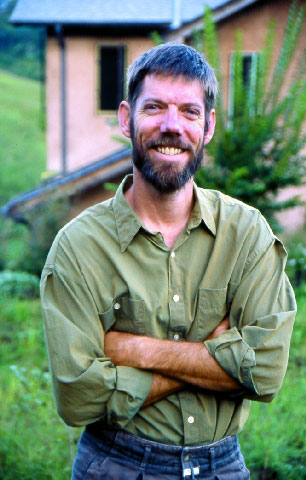

In 12 years of home construction, I have never talked to anyone who had realistic expectations about building a house. We green building types usually are even worse because our goals are so high that we don't simply want a good house, we want to transform our lives and save the planet in the process. These are wonderful aspirations. I have no desire to denigrate them, but I would like to inoculate the dream with a bit of realism while also providing tips for grabbing that dream by the horns and dragging it into the light of day.
The first hard lesson is that you and only you are responsible for your house. You may need the help of professionals, but ultimately only you can figure out how to integrate your idiosyncratic personal needs with your exact spit of land.
The point is that a good house is the symbiosis between specific people and a specific place. If you agree with that sentiment, then you have no choice but to get involved in the creation of your house. The only question is, how far should you go? Build it yourself, or write checks and watch from the sidelines?To me, the only imperative is that the house comes from you. The number of people you get to help with the building is unimportant. Even the most rugged individualist with only a few hand tools and a pickup that hauls soil and straw (for making cob) has enlisted the help of hundreds of people: those who designed and built the truck, manufactured the tools or grew the straw. Enlisting the help of architects and builders is no different - we all need help. The important thing to realize is that the building buck stops with you. The house is your dream, and its your money.
None of us are indigenous builders with an intuitive understanding of the materials we'll be using and how they can come together to create a complete entity called a house. (If you are, then stop reading and start building!) Its not enough to say that youre going to build a house with straw, earth or wood. You have to understand how those materials will interact with your particular outside environment in a way that creates the inside environment that you need to be comfortable, happy and healthy. To do that, youll need to research four basic topics and how they relate to your particular situation. Whether you're going to build it yourself or just take responsibility for the process, you need to understand:
Structure. The manner in which your building will hold itself up.
Temperature. The mechanism by which your building will maintain a basically stable interior temperature in the face of fluctuating outdoor temperatures.
Separation. How you'll separate your building from the destructive forces of nature (sun, water, wind and life-forms).
Connection. The ways in which your building will keep you in constant connection to those same natural forces - air, water, sunlight - because they are precisely what you need to survive.
While researching the basics, you'll encounter differing opinions. In fact, if you've ever seriously researched anything, then you've learned that experts tend to disagree. In home construction, experts don't just disagree, they sometimes live in alternate universes. I can't think of one basic building topic on which I haven't read credible, yet diametrically opposed opinions: venting, vapor barriers, building materials, insulation values, air exchange - the list continues. Experts debate these things, and best practices go through constant revisions and updates.
Another problem is misinformation. The fact is that many well-meaning people involved in the varied realm of green building see it as a crusade, a battle of good versus evil. In struggling to get people to listen, they can fall prey to painting a picture that's too rosy. The unfortunate result is that you have to take everything with a grain of salt. Heres' just one example: Until recently, it was common to see claims that three-string straw bale walls produce insulation values of up to R-60 (R-value is a measurement of resistance to heat flow). After the excitement cleared and the science floated to the surface, it seems that the more accurate R-value for three-string straw bale walls is in the low 30s. That's wonderful insulation, but it's about half of the original claims. There are similar myths for many other green building systems and materials.
The best protection against this problem is to distrust superlatives. If someone claims that a material or system is easy, cheap or the best, exercise at least a little skepticism. On the other hand, a plethora of useful information and wonderful, knowledgeable people are out there. You have to create a balance between your superior knowledge of your exact situation and the superior experience and general knowledge of experts.
Because housing has to fit both the people and the places involved, theories and learning will only take you so far. When looking for guidance, you need to find people who share your green building point of view and have experience with your local environment, both climatic and human.
If there are any surviving indigenous building practices in your area, then that's the first place to start find out what the old-timers are doing. Don't forget that in many ways there are more similarities than differences between green and conventional buildings. Therefore, local experience - even if it is staunchly conventional - often is quite valuable. Plastering is a good example. The ways in which different plaster mixes will perform in your area can be determined only through experience. I'd rather discuss a mix with a local building veteran than have an experienced green builder from another climate choose my mix. The best approach is to listen to both experts and then make your own decision.
The success of your house will be measured in the details. We could build two houses side by side that look identical. One could be drafty, moldy and experience structural damage in just a few years. The other could be warm and cozy, withstanding the elements for many years without damage. The difference would be in the details. Is the flashing correctly installed around the roof, chimney, doors, windows and at the base of the walls? Where does rainwater go after it hits the roof? Is there a foundation drain? Was the passive solar thermal mass inside the house isolated from the earth and the outside air? Should it have been for your climate? The answers to these and other questions can't be easily determined after your house has been built. They require planning and careful attention to detail during construction.
Detailing is a potential downside to choosing some green building techniques because these approaches are not yet part of the construction vernacular. Where do you turn for advice when you have technical difficulties attaching wood roof framing to a monolithic cob wall; or when you are confused about flashing details for a cordwood building? Books only give general information. Text that seems clear in print can be incredibly incomplete when you are trying to carry out the operation described. Inexperience and trailblazing don't go well together. If you don't know what you are doing, then choose building alternatives that have a history in your area and lean on those experienced with them when you need help or advice.
Having said all of that, I think you can build or be very involved in building your own house. The less experience you have, the more preparation you'll have to do. The ideal approach would be to get involved in a project similar to your own with an experienced person in your area. If you plan to build with wood and straw, then look for work (whether paid or volunteer) using those materials.
If you cant find a project similar to what you have in mind, then build a small version of your house - perhaps a workshop or playhouse. Make sure it has all of the elements that your real house will need, such as doors, windows, heating and good ventilation. Either way you do it, the hands-on experience will teach you invaluable lessons: either that you don't want to build your own house, or specific things you'll need to do better to make the real house work.
Though I'm a professional builder and consultant now, my interest in housing started with the desire to build a house for myself. I began with a lot of book learning, then I eventually quit my job to become a construction worker. I spent several years learning by making a living in the building trades. Still, when I started building my house, I was overwhelmed by the task. It took about four times longer and cost much more than I had anticipated. It all turned out fine in the end, but I wouldn't want to do it again. On the other hand, my house is my biggest achievement. I know how everything goes together, its strengths and weaknesses. Building my own home has given me skills, muscles and a perspective that I didn't have before. From that point of view, I really recommend it. I'll add this: No matter how much you prepare, in the end you won't think you prepared too much.
You've done your research and you know what you want, but you don't want to build it yourself. What do you do? This is a difficult question because you aren't going to be the typical client - you want to be very involved in the decision-making process. There are things you definitely want to try; there are other things you want to discuss before making a final decision. Many contractors will balk at this level of involvement, often for good reason. Professional builders are paid not only to build, but also to spend large amounts of their clients money. The fact that clients employ contractors to spend their money is often forgotten - nearly every builder has a handful of stories about bad clients. Approaching someone with such a history and saying you want your house to be a team effort can be complicated. But if you do your homework, this problem should solve itself. You'll be able to explain the theories behind different aspects of the design and why they are important. Introduce your project with enthusiasm and honesty, and it will be obvious that you're an important member of the team.
The problem of finding good people to work with is exacerbated by our modern mobile society. Probably the worst thing you can do is move to a new area and begin building right away. Not only will you be unfamiliar with local conditions, but you will have no social network on which to rely. Remember, we are social animals. You can't expect to build the kind of relationships needed to create such a masterpiece as a good house by screeching into town and waving your checkbook around. People work for money, yes, but good builders also work to build good houses for personal satisfaction and pride. If things are to go well, then your builder needs to be your friend, or at least someone who respects you as part of the community.
Once you find someone who you trust and who is willing to work with you, make it your mantra that you will be a great client. Put yourself in the contractor's shoes and it won't be difficult to calm down at frustrating moments. At the same time, you have to hold firm to making your own decisions. This is your house, and having someone else build it is a compromise that waters down its specific nature to some degree. The balance between not getting in the way and remaining the decision maker will be a graceful dance.
Regardless of how much you prepare, mistakes are inevitable. The best way to minimize them is with a construction process that combines intense preparation with flexibility while building. Lets look at straw bale construction for an example. Especially in a wet climate, you need to think ahead when using straw bales. First, you need to decide how your bales are going to interact with water and water vapor. Next, you need to plan the logistics of the construction carefully. In my climate, I recommend using a skeletal framing structure and installing the bales as infill. That way, you can build a roof to shelter the bales before they ever arrive. Finally, you need to plan all of the details that will keep your bales dry for many years to come: flashing, stem wall height, gutters, drainage and plaster. Even with all of that preparation, straw bale infill allows for some flexibility during construction. Window placement, for example, can be adjusted by mocking up bales and setting windows in place to see how they work. Diligent preparation will give you the peace of mind to be creative and adaptable during construction thats the dynamic you want.
Of course you're still going to make mistakes. You'll be in very good, or at least very large, company. But you'll have done your best to prepare, and hey, we all make mistakes. As in life, the grace with which you bounce back will say more about you than pretty much anything else.
For me, green building isn't about fads, right versus wrong, how things ought to be or how you wish things were. Its about how things are: How you are, how your land is, and how the two can come together.
Yet the true reason most people are drawn to building their own homes is to fulfill a dream that place where you can relax, where all the pieces of your life come together in a harmonious whole.
The paradox of building a good house is that you have to remain grounded in reality while dreaming. To do that, you have to understand and deal honestly with the realities of your situation your skills, your finances, your site conditions, your time constraints, your personal likes and dislikes, your social network while allowing yourself to push the envelope of your perceived limitations. It's the dance between these two poles that ultimately will lead to what will be your good house.
|
STEVE MAXWELL Doing thorough research and having frequent conversations with your contractor are important aspects of making your dream home a reality. |
CLARKE SNELL There is no substitute for practical experience. If you’re not familiar with construction, then learn valuable lessons by building a shed or office. |
CLARKE SNELL That’s a small, simple version of your house. |
|
CLARKE SNELL The owner-builders of this straw bale home in western North Carolina took a patient and deliberate approach:gaining experience through other projects, getting to know the site beforehand and focusing on details during construction. |
 LISA MANDLE Whether you build your own house or hire a contractor, get involved in the process, says author Clarke Snell. |
|